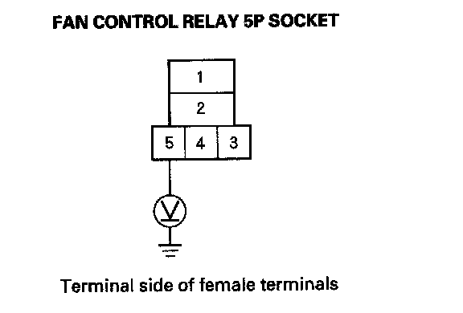
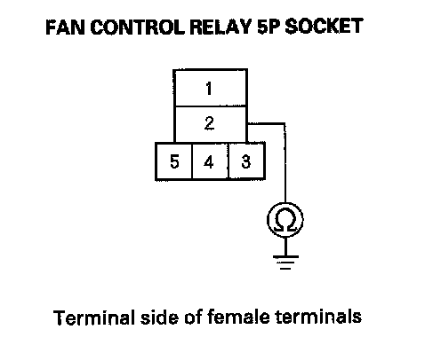

Component Tests and General Diagnostics
Radiator Fan High Speed Circuit Troubleshooting1. Remove the fan control relay from the under-hood fuse/relay box, and test it.
Is the relay OK?
YES - Go to step 2.
NO - Replace the fan control relay.
2. Check the No. 36 (10 A) fuse in the under-dash fuse/relay box.
Is the fuse OK?
YES - Go to step 3.
NO - Replace the fuse.
3. Turn the ignition switch ON (II).
4. Measure the voltage between the fan control relay 5P socket terminal No. 5 and body ground.

Is there battery voltage?
YES - Go to step 5.
NO - Repair open in the wire between the underhood fuse/relay box and the under-dash fuse/relay box.
5. Check for continuity between the fan control relay 5P socket terminal No. 2 and body ground.

Is there continuity?
YES - Replace the under hood fuse/relay box.
NO - Repair open in the wire between the fan control relay 5P socket terminal No. 2 and body ground (G301). If the wire is OK, check for poor ground at G301.